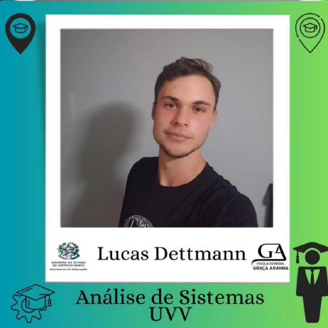

Bem-vindo ao Meu Portfólio
Desenvolvedor Web Full Stack | Transformando ideias em realidade digital
Sobre Mim
Olá! Sou um desenvolvedor apaixonado por tecnologia e programação. Atualmente curso ADS na UVV e busco constantemente me atualizar e evoluir na área de desenvolvimento de software. Meu objetivo é construir soluções web completas, do backend ao frontend, sempre prezando pela qualidade e experiência do usuário.
Habilidades
Sei desenvolver sistemas web completos. Desde o backend até o banco de dados e frontend. Estou em constante aprendizado, expandindo meus conhecimentos em diversas tecnologias do mercado.
Frontend
HTML, CSS, JavaScript
Backend
Desenvolvimento de APIs e sistemas
Banco de Dados
SQL, Modelagem de Dados
Hobbies
O hobby é trabalhoso mais recompensador. Gosto de estudar programação e jogar jogos, atividades que me desafiam e proporcionam crescimento pessoal. Acredito que dedicar tempo às nossas paixões é o que nos torna melhores profissionais e pessoas.
| Hobby | Descrição |
|---|---|
| 🎮 Gaming | Jogos que desafiam o raciocínio e estratégia |
| 💻 Programação | Estudo e prática de novas tecnologias |
Vida Acadêmica
Cursei o fundamental 1 e 2 e ensino médio na Escola Graça Aranha em Santa Maria de Jetibá. Atualmente curso ADS (Análise e Desenvolvimento de Sistemas) na UVV e pretendo fazer alguma pós lato sensu num futuro próximo para me especializar ainda mais na área.
| Período | Instituição | Descrição |
|---|---|---|
| Fundamental 1 e 2 | Escola Graça Aranha | Educação básica em Santa Maria de Jetibá |
| Ensino Médio | Escola Graça Aranha | Conclusão do ensino médio |
| Atual | UVV | Curso Superior - ADS |
Matérias da Faculdade
Atualmente estou cursando as seguintes disciplinas:
- Banco de Dados II: Onde aprendemos consultas com SQL mais avançadas, aprofundando conhecimentos em modelagem e manipulação de dados.
- Engenharia de Software II: Foco em requisitos não funcionais e arquitetura de software, aprendendo a projetar sistemas robustos e escaláveis.
- Desenvolvimento de Softwares para Web: Onde escrevo HTML, CSS e JavaScript, aprendendo a criar interfaces web modernas e responsivas.
Eventos e Participações
Já participei de algumas palestras na UVV e da ACAPS, onde pude ampliar meu conhecimento sobre novas tecnologias e tendências do mercado de tecnologia. Busco sempre estar atualizado e conectado com a comunidade tech.
Objetivos Profissionais
Tenho pretensão de continuar trabalhando com desenvolvimento web e, talvez, me especializar em arquitetura de softwares. Meu objetivo é me tornar um profissional completo, capaz de entregar soluções completas e de alta qualidade.
Dados Pessoais
Formação
ADS - UVV
Local
Santa Maria de Jetibá - ES